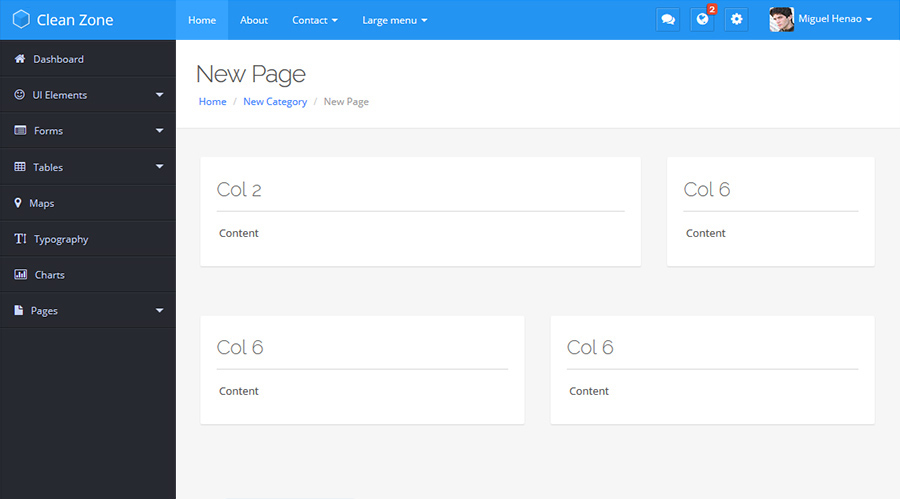

General
In this section you will find the multiple HTML and CSS structures that were applied to the general style of the template.
HTML Structure
All the pages in this template are divided in three parts Main Menu, Side Bar and Content.
<!DOCTYPE html>
<html lang="en">
<body>
<div id="head-nav" class="navbar navbar-default navbar-fixed-top">
<!-- Main Menu -->
</div>
<div id="cl-wrapper">
<div class="cl-sidebar">
<!-- Sidebar Menu -->
</div>
<div class="container-fluid" id="pcont">
<div class="cl-mcont">
<!-- Content -->
</div>
</div>
</div>
</body>
</html>
Basic Head Structure
In the head we include the following elements in their respective order:
- Google Fonts (CSS) - Jquery (JS) - Bootstrap core (CSS) - Font Awesome 4 (CSS) -- Plugins Scripts & CSS -- - General Plugins Instances Init (JS) - Template Style (CSS)
<!DOCTYPE html> <html lang="en"> <head> <meta charset="utf-8"> <meta name="viewport" content="width=device-width, initial-scale=1.0"> <meta name="description" content=""> <meta name="author" content=""> <title>Clean Zone</title> <link href='fonts/fonts.css' rel='stylesheet' type='text/css'> <script src="js/jquery.js"></script> <!-- Bootstrap core CSS --> <link href="js/bootstrap/dist/css/bootstrap.css" rel="stylesheet"> <link rel="stylesheet" href="fonts/font-awesome-4/css/font-awesome.min.css"> <!-- Plugins Includes --> <!-- General Plugins Instances --> <script type="text/javascript" src="js/behaviour/general.js"></script> <!-- Template Style --> <link href="css/style.css" rel="stylesheet"> </head> <body>
Main Menu
The main menu is divided in four sections Brand Logo, Left Menu, Notifications and Profile Menu.
<div id="head-nav" class="navbar navbar-default navbar-fixed-top">
<div class="container-fluid">
<!-- Left Menu Side -->
<div class="navbar-header">
<!-- Toggle Button visible for Extra Small Devices -->
<button type="button" class="navbar-toggle" data-toggle="collapse" data-target=".navbar-collapse">
<span class="icon-bar"></span>
<span class="icon-bar"></span>
<span class="icon-bar"></span>
</button>
<!-- Brand Logo -->
<a class="navbar-brand" href="#"><span>Clean Zone</span></a>
</div>
<!-- Right Menu Side -->
<div class="navbar-collapse collapse">
<ul class="nav navbar-nav">
<!-- Left Menu Items -->
</ul>
<ul class="nav navbar-nav navbar-right user-nav">
<!-- Right Profile Menu Items -->
</ul>
<ul class="nav navbar-nav navbar-right not-nav">
<!-- Right Menu Notification Items -->
</ul>
</div>
</div>
</div>
Sidebar
This is the basic HTML structure for the sidebar.
<div class="cl-sidebar">
<!-- Collapse Toggle -->
<div class="cl-toggle"><i class="fa fa-reorder"></i></div>
<!-- Menu Items -->
<div class="cl-navblock">
<ul class="cl-vnavigation">
<li><a href="#"><i class="fa fa-icon-name"></i>First Level Item</a>
<ul class="sub-menu">
<li><a href="#">Second Level Item</a></li>
</ul>
</li>
</ul>
</div>
</div>
Content
This is the basic HTML structure for the main container.
<div class="container-fluid" id="pcont">
<div class="cl-mcont">
<!-- Content goes here -->
</div>
</div>
Sub-Header
In this element you can put the page title, breadcrums, etc... Put it inside the .container-fluid div and before the .cl-mcont
<div class="container-fluid" id="pcont">
<div class="page-head">
<h2>Blank Page</h2>
<ol class="breadcrumb">
<li><a href="#">Home</a></li>
<li><a href="#">Category</a></li>
<li class="active">Sub Category</li>
</ol>
</div>
<div class="cl-mcont">
<!-- Content... -->
</div>
</div>
Columns & Grid System
This template uses Bootstrap 3 for almost all elements, if you don't know how to use it i highly recommend you to read Bootstrap 3 Documentation before to get started. You can see it in action at ui-grid.html file.
This is a basic example of bootstrap grid system:
HTML Code
<div class="row"> <div class="col-md-1">.col-md-1</div> <div class="col-md-1">.col-md-1</div> <div class="col-md-1">.col-md-1</div> <div class="col-md-1">.col-md-1</div> <div class="col-md-1">.col-md-1</div> <div class="col-md-1">.col-md-1</div> <div class="col-md-1">.col-md-1</div> <div class="col-md-1">.col-md-1</div> <div class="col-md-1">.col-md-1</div> <div class="col-md-1">.col-md-1</div> <div class="col-md-1">.col-md-1</div> <div class="col-md-1">.col-md-1</div> </div> <div class="row"> <div class="col-md-8">.col-md-8</div> <div class="col-md-4">.col-md-4</div> </div> <div class="row"> <div class="col-md-4">.col-md-4</div> <div class="col-md-4">.col-md-4</div> <div class="col-md-4">.col-md-4</div> </div> <div class="row"> <div class="col-md-6">.col-md-6</div> <div class="col-md-6">.col-md-6</div> </div>
Panels
The panels boxes are a basic structural elements to wrap any HTML content with a visual standard box, they are divided in Head and Content.
Panel width is determinated by its parent element, usually a <div class="col-#-#"></div>:
<div class="block-flat">
<div class="header">
<h3>Title</h3>
</div>
<div class="content">
<!-- Content -->
</div>
</div>
Start a New Page
In this example i'm going to show you how to start a new page from the begining, we will have a layout with four panels.
1. To start a new page you can make a copy of pages-blank.html file.
2. Edit the new file and find the main container <div class="container-fluid" id="pcont">, put a Sub-Header code inside and before the <div class="cl-mcont"></div> like this:
<div class="container-fluid" id="pcont">
<div class="page-head">
<h2>New Page</h2>
<ol class="breadcrumb">
<li><a href="#">Home</a></li>
<li><a href="#">New Category</a></li>
<li class="active">New Page</li>
</ol>
</div>
<div class="cl-mcont"></div>
</div>
3. Now let's create two rows and two columns in each row, all this in .cl-mcont div:
<div class="container-fluid" id="pcont">
<div class="page-head">
<h2>Blank Page</h2>
<ol class="breadcrumb">
<li><a href="#">Home</a></li>
<li><a href="#">Category</a></li>
<li class="active">Sub Category</li>
</ol>
</div>
<div class="cl-mcont">
<div class="row">
<div class="col-md-8"></div>
<div class="col-md-4"></div>
</div>
<div class="row">
<div class="col-md-6"></div>
<div class="col-md-6"></div>
</div>
</div>
</div>
The class .col-md-# determinates the column size based in 12 column size system, for more info visit Bootstrap Documentation.
4. Finally we are going to create the panels, put all together and we're done!
<div class="container-fluid" id="pcont">
<div class="page-head">
<h2>Blank Page</h2>
<ol class="breadcrumb">
<li><a href="#">Home</a></li>
<li><a href="#">Category</a></li>
<li class="active">Sub Category</li>
</ol>
</div>
<div class="cl-mcont">
<div class="row">
<div class="col-md-8">
<div class="block-flat">
<div class="header">
<h3>Title</h3>
</div>
<div class="content">
<p>Content</p>
</div>
</div>
</div>
<div class="col-md-4">
<div class="block-flat">
<div class="header">
<h3>Title</h3>
</div>
<div class="content">
<p>Content</p>
</div>
</div>
</div>
</div>
<div class="row">
<div class="col-md-6">
<div class="block-flat">
<div class="header">
<h3>Title</h3>
</div>
<div class="content">
<p>Content</p>
</div>
</div>
</div>
<div class="col-md-6">
<div class="block-flat">
<div class="header">
<h3>Title</h3>
</div>
<div class="content">
<p>Content</p>
</div>
</div>
</div>
</div>
</div>
</div>
Basic Javascript
The javascript initialization is written with "The Module Pattern" which encapsulates certain code, and allows you to use the code when you need it. We use a global javascript object called "App", all the specific pages has an Initializer Method in this object, also you can choose what plugins are enabled or not in certain pages by setting the object options.
How it works
1. First you must to include the "general.js" file somewhere in yor page:
<script type="text/javascript" src="js/behaviour/general.js"></script>
2.The general javascript initialization includes for example the Tooltips, Popovers and other general components that you could probably use in any page. To run that make sure you have include the "general.js" file and then call the "init()" method:
<script type="text/javascript">
$(function(){
//initialize all the general components
App.init();
});
</script>
3. That's it! now you can begin to create a new page.
General Components
These are the elements initialized in "init();" method:
| Component | Description |
|---|---|
| Sidebar Functionality | Sidebar interactions |
| Tooltips | Initializes the tooltips, and can be used in any HTML Object with data-toggle="tooltip" attribute.Example: <a data-original-title="I am a Tooltip" href="#" data-toggle="tooltip">Tooltip</a> |
| Popovers | Initializes the popovers, and can be used in any HTML Object with data-popover="popover" attribute.Example: <a data-placement="top" data-content="content..." data-original-title="Title" data-popover="popover" href="#">Popover</a> |
| Nano Scroller | Initializes the NanoScroller plugin to use it with ".nscroller" class. |
| Nestable Lists | Initializes the Nestable Lists plugin to use it with ".dd" class. |
| Bootstrap Switch | Initializes the Switch plugin to use it with ".switch" class. |
| DateTime Picker | Initializes the DateTime Picker plugin to use it with ".datetime" class. |
| Select2 | Initializes the Select2 plugin to use it with ".select2" class. |
| Select2 - Tags | Initializes the Select2 Tags plugin option to use it with ".tags" class. |
| Bootstrap Slider | Initializes the Slider plugin to use it with ".bslider" class. |
Default Options
These are the default options in "init();" method:
| Option | Description | Type | Default Value |
|---|---|---|---|
| tooltip | Initializes the tooltips. | Boolean | true |
| popover | Initializes the popovers. | Boolean | true |
| nanoScroller | Initializes the NanoScroller. | Boolean | true |
| nestableLists | Initializes the Nestable Lists. | Boolean | true |
| bootstrapSwitch | Initializes the Switch plugin. | Boolean | true |
| dateTime | Initializes the DateTime Picker plugin. | Boolean | true |
| select2 | Initializes the Select2 plugin. | Boolean | true |
| tags | Initializes the Select2 Tags. | Boolean | true |
| slider | Initializes the Slider plugin. | Boolean | true |
App Methods
These are the App methods:
| Method | Description |
|---|---|
| dashBoard | Initializes the Dash Board javascript. |
| uiElements | Initializes the Ui Elements page javascript. |
| nestableLists | Initializes the Nestable Lists page javascript. |
| wizard | Initializes the Wizard page javascript. |
| masks | Initializes the masks page javascript.. |
| textEditor | Initializes the Text Editor page javascript. |
| dataTables | Initializes the Data Tables page javascript. |
| maps | Initializes the Maps page javascript. |
| charts | Initializes the Charts page javascript. |
| speech | Initializes the speech recognition API. (Only works on Chrome25+) |
Example
These are the App methods:
<script type="text/javascript">
$(document).ready(function(){
App.init();//initialize the javascript
App.dashBoard();//initialize the dashBoard method
});
</script>
Voice Recognition API
Thanks to Google Speech API we can do Speech Recognition in our web sites, initially Chrome 25+ and up versions support this, but don't worry! browsers are working on a standard and soon we will see this working on our favorites browsers.
Initialize
To initialize Speech API call "App.speech();" method, also you can pass some options:
| Option | Default | Description |
|---|---|---|
| continuous | true | Set the continuous recognizing that enable the user to make long pauses and dictate large texts. More info |
| interim | true | Enable interim results fetching. Access to interim recognition results and can display them in the text box immediately after receiving them. The user will see a constantly refreshing text, otherwise the recognized text will be available only after a pause. |
| lang | User local language | This attribute will set the language of the recognition for the request, using a valid BCP 47 language tag like "en-UK" or "en-US". More info |
| onEnd | event:function | Fired when the service has disconnected. More info |
| onEnd | event:function | Fired when the service has disconnected. More info |
| onResult | event:function | Fired when the speech recognizer returns a result. More info |
| onNoMatch | event:function | Fired when the speech recognizer returns a final result with no recognition hypothesis that meet or exceed the confidence threshold. More info |
| onSpeechStart | event:function | Fired when the speech that will be used for speech recognition has started. More info |
| onSpeechEnd | event:function | Fired when the speech that will be used for speech recognition has ended. More info |
Methods
| Method | Description |
|---|---|
| start | Set the continuous recognizing that enable the user to make long pauses and dictate large texts. More info |
| stop | The stop method represents an instruction to the recognition service to stop listening to more audio, and to try and return a result using just the audio that it has already received for this recognition. More info |
Add Voice Commands
To declare a new voice command call "App.speechCommand();" method, and you can set these options:
| Option | Optional | Description |
|---|---|---|
| action | NO | This event fires when API match the voice command. |
| listen | YES | This event returns the second voice results after the API match primary command, this option is perfect for voice commands who expects a voice answer. |
| interim | YES | This event returns the interim results before fire action event. |
| dictation | YES | This option enables dictation to listen option, this allow listen event to be fired many times till dictationEndCommand matches. |
| dictationEndCommand | YES | This is the voice command to stop dictation. |
| dictationEnd | YES | Fires when dictation match dictationEndCommand |
Examples
1. Basic initialization
App.speech({
lang: 'en-US'
});
$(".speech-button").click(function(){
App.speech("start");
});
2. Add Basic Command
App.speechCommand('hello world',{
action: function(){
alert("Hello world!");
}
});
3. Wait for an answer
App.speechCommand('set name',{
action: function(){
alert("Tell me your name");
},
listen: function(r){
alert("Your name is: " + r);
}
});
4. Dictation
App.speechCommand('email',{
dictation: true,
dictationEndCommand: 'end of email',
dictationEnd: function(){
alert("Email has been sent successfully!");
},
action: function(){
alert("Tell me your e-mail");
},
listen: function(r){
$('#email-box').append(" " + r);
}
});
Plugins Includes
Here are the required files for each plugin:
Nano Scroller
This plugin can be found in the dashboard chat and notification menu examples.
Visit the Official Documentation
<!-- Nano Scroller --> <script type="text/javascript" src="js/jquery.nanoscroller/jquery.nanoscroller.js"></script> <link rel="stylesheet"type="text/css" href="js/jquery.nanoscroller/nanoscroller.css" />
Spark Line
This plugin can be found in the dashboard charts.
Visit the Official Documentation
<script type="text/javascript" src="js/jquery.sparkline/jquery.sparkline.min.js"></script>
jQuery Flot Charts
This plugin can be found in the dashboard charts.
Visit the Official Documentation
<script type="text/javascript" src="js/jquery.flot/jquery.flot.js"></script> <script type="text/javascript" src="js/jquery.flot/jquery.flot.pie.js"></script> <script type="text/javascript" src="js/jquery.flot/jquery.flot.resize.js"></script> <script type="text/javascript" src="js/jquery.flot/jquery.flot.labels.js"></script>
Nestable Lists
This plugin can be found in Nestable Lists page.
Visit the Official Documentation
<script type="text/javascript" src="js/jquery.nestable/jquery.nestable.js"></script>
Easy Pie Chart
This plugin can be found in the dashboard charts.
Visit the Official Documentation
<script type="text/javascript" src="js/jquery.easypiechart/jquery.easy-pie-chart.js"></script> <link rel="stylesheet"type="text/css" href="js/jquery.easypiechart/jquery.easy-pie-chart.css" />
Bootstrap Switch
This plugin can be found in the forms pages.
Visit the Official Documentation
<script type="text/javascript" src="js/bootstrap.switch/bootstrap-switch.min.js"></script> <link rel="stylesheet"type="text/css" href="js/bootstrap.switch/bootstrap-switch.css" />
Date Time Picker
This plugin can be found in the forms pages.
Visit the Official Documentation
<link rel="stylesheet"type="text/css" href="js/bootstrap.datetimepicker/css/bootstrap-datetimepicker.min.css" /> <script type="text/javascript" src="js/bootstrap.datetimepicker/js/bootstrap-datetimepicker.min.js"></script>
Jquery Select2
This plugin can be found in the forms pages.
Visit the Official Documentation
<link rel="stylesheet"type="text/css" href="js/jquery.select2/select2.css" /> <script src="js/jquery.select2/select2.min.js" type="text/javascript"></script>
Bootstrap Slider
This plugin can be found in the forms pages.
Visit the Official Documentation
<link rel="stylesheet"type="text/css" href="js/bootstrap.slider/css/slider.css" /> <script src="js/bootstrap.slider/js/bootstrap-slider.js" type="text/javascript"></script>
Google Maps API
This plugin can be found in maps page.
Visit the Official Documentation
<script src="https://maps.googleapis.com/maps/api/js?v=3.exp&sensor=false"></script>
Jquery Gritter Notifications
This plugin can be found in UI Elements > General page.
Visit the Official Documentation
<link rel="stylesheet" type="text/css" href="js/jquery.gritter/css/jquery.gritter.css" /> <script type="text/javascript" src="js/jquery.gritter/js/jquery.gritter.min.js"></script>
CKEditor
This plugin can be found in UI Elements > General page.
Visit the Official Documentation
<script src="js/ckeditor/ckeditor.js"></script> <script src="js/ckeditor/adapters/jquery.js"></script>
Fuel UX - Wizard
We use this plugin just for wizzard complement and you can see it in Forms > Wizard page.
Visit the Official Documentation
<link href="js/fuelux/css/fuelux.css" rel="stylesheet"> <link href="js/fuelux/css/fuelux-responsive.min.css" rel="stylesheet"> <script type="text/javascript" src="js/fuelux/loader.min.js"></script>
Data Tables
This plugin can be found in Tables > Data Tables.
Visit the Official Documentation
<link rel="stylesheet"type="text/css" href="js/jquery.datatables/bootstrap-adapter/css/datatables.css" /> <script type="text/javascript" src="js/jquery.datatables/jquery.datatables.min.js"></script> <script type="text/javascript" src="js/jquery.datatables/bootstrap-adapter/js/datatables.js"></script>
jQuery Masked Input
This plugin can be found in Forms > Masks.
Visit the Official Documentation
<script src="js/jquery.maskedinput/jquery.maskedinput.js" type="text/javascript"></script>
Parsley
This plugin can be found in Forms > Validation.
Visit the Official Documentation
<script src="js/jquery.parsley/parsley.js" type="text/javascript"></script>
Prettify
This plugin can be found in Typography.
Visit the Official Documentation
<script type="text/javascript" src="js/prettify/run_prettify.js"></script> <link type="text/css" rel="stylesheet" href="js/prettify/prettify.css" />
Modernizr
This plugin can be found in form elements
Visit the Official Documentation
<script src="js/modernizr.js" type="text/javascript"></script>
Intro.js
This plugin can be found in dashboard
Visit the Official Documentation
<link rel="stylesheet" type="text/css" href="js/intro.js/introjs.css" /> <script src="js/intro.js/intro.js" type="text/javascript"></script>
Drop Zone
This plugin can be found in form upload
Visit the Official Documentation
<link rel="stylesheet" type="text/css" href="js/dropzone/css/dropzone.css" /> <script type="text/javascript" src="js/dropzone/dropzone.js"></script>
iCheck
This plugin can be found in form elements
Visit the Official Documentation
<link href="js/jquery.icheck/skins/square/blue.css" rel="stylesheet"> <script type="text/javascript" src="js/jquery.icheck/icheck.min.js"></script>
Bootstrap-wysihtml5
This plugin can be found in form text editors
Visit the Official Documentation
<link rel="stylesheet" type="text/css" href="js/bootstrap.wysihtml5/src/bootstrap-wysihtml5.css"></link> <script type="text/javascript" src="js/bootstrap.wysihtml5/lib/js/wysihtml5-0.3.0.js"></script> <script type="text/javascript" src="js/bootstrap.wysihtml5/src/bootstrap-wysihtml5.js"></script>
Summernote
This plugin can be found in form text editors
Visit the Official Documentation
<link rel="stylesheet" type="text/css" href="js/bootstrap.summernote/dist/summernote.css" /> <script type="text/javascript" src="js/bootstrap.summernote/dist/summernote.min.js"></script>
Masonry
This plugin can be found in gallery page
Visit the Official Documentation
<script type="text/javascript" src="js/masonry.js"></script>
Magnific Popup
This plugin can be found in gallery page
Visit the Official Documentation
<link rel="stylesheet" type="text/css" href="js/jquery.magnific-popup/dist/magnific-popup.css" /> <script type="text/javascript" src="js/jquery.magnific-popup/dist/jquery.magnific-popup.min.js"></script>
jVectorMap
This plugin can be found in vector maps page
Visit the Official Documentation
<link rel="stylesheet" href="js/jquery.vectormaps/jquery-jvectormap-1.2.2.css" type="text/css" media="screen"/> <script src="js/jquery.vectormaps/jquery-jvectormap-1.2.2.min.js"></script>
UI Elements
For almost all ui elements is the same bootstrap documentation and it can be found in Bootstrap CSS and Bootstrap Components docs. For elements which part of their structure have changes, here is their respective documentation.
Theme Alerts
The theme alerts style structure changes just a little, you can change the alert icon (See icons docs section).
- To make rounded borders just put .rounded class in the main alert div container.
<div class="alert alert-success alert-white rounded"> <button data-dismiss="alert" class="close" type="button">×</button> <div class="icon"><i class="icon-ok"></i></div> <strong>Info!</strong> The page has been added. </div> <div class="alert alert-info alert-white rounded"> <button data-dismiss="alert" class="close" type="button">×</button> <div class="icon"><i class="icon-info-sign"></i></div> <strong>Info!</strong> The page has been added. </div> <div class="alert alert-warning alert-white rounded"> <button data-dismiss="alert" class="close" type="button">×</button> <div class="icon"><i class="icon-warning-sign"></i></div> <strong>Info!</strong> The page has been added. </div> <div class="alert alert-danger alert-white rounded"> <button data-dismiss="alert" class="close" type="button">×</button> <div class="icon"><i class="icon-remove-sign"></i></div> <strong>Error!</strong> The page has been added. </div>
Two Column Menu
To make a Two Column Menu add .col-menu-2class to the ul.dropdown-menu main ul element, and divide the ul li elements in two divs with .col-sm-6 .no-padding classes:

<ul class="dropdown-menu col-menu-2">
<div class="col-sm-6 no-padding">
<li class="dropdown-header"><i class="fa fa-#"></i>Menu Header</li>
<li><a href="#">Menu Item</a></li>
</div>
<div class="col-sm-6 no-padding">
<li class="dropdown-header"><i class="fa fa-#"></i>Menu Header</li>
<li><a href="#">Menu Item</a></li>
</div>
</ul>
Gritter Notifications
All Gritter Notification functionality can be found in their official docs, however to make a theme styled notification you just add the .clean class via gritter plugin option: class_name.

$.gritter.add({
title: 'Title',
text: 'Content',
class_name: 'clean',//<--------- Here
});
Buttons
Most of the buttons have the same bootstrap structure, and can be found in Bootstrap Buttons Docs, for the rest:
Rounded corners
Just add ".btn-rad" class to the button.

Semi-transparent buttons
Just add ".btn-transparent" class to the button.

Social Buttons
Here is the HTML code for social buttons examples in respective order:

<button class="btn btn-default" type="button"><i class="icon-facebook"></i></button> <button class="btn btn-default" type="button"><i class="icon-twitter"></i></button> <button class="btn btn-default" type="button"><i class="icon-google-plus"></i></button> <button class="btn btn-default" type="button"><i class="icon-dribbble"></i></button> <button class="btn btn-default" type="button"><i class="icon-flickr"></i></button> <button class="btn btn-default" type="button"><i class="icon-linkedin"></i></button> <button class="btn btn-default" type="button"><i class="icon-youtube-play"></i></button> <button class="btn btn-default" type="button"><i class="icon-pinterest"></i></button> <button class="btn btn-default" type="button"><i class="icon-github"></i></button> <button class="btn btn-default" type="button"><i class="icon-tumblr"></i></button> <button class="btn btn-default btn-facebook" type="button"><i class="icon-facebook"></i></button> <button class="btn btn-default btn-twitter" type="button"><i class="icon-twitter"></i></button> <button class="btn btn-default btn-google-plus" type="button"><i class="icon-google-plus"></i></button> <button class="btn btn-default btn-dribbble" type="button"><i class="icon-dribbble"></i></button> <button class="btn btn-default btn-flickr" type="button"><i class="icon-flickr"></i></button> <button class="btn btn-default btn-linkedin" type="button"><i class="icon-linkedin"></i></button> <button class="btn btn-default btn-youtube" type="button"><i class="icon-youtube-play"></i></button> <button class="btn btn-default btn-pinterest" type="button"><i class="icon-pinterest"></i></button> <button class="btn btn-default btn-github" type="button"><i class="icon-github"></i></button> <button class="btn btn-default btn-tumblr" type="button"><i class="icon-tumblr"></i></button> <button class="btn btn-default btn-facebook bg" type="button"><i class="icon-facebook"></i></button> <button class="btn btn-default btn-twitter bg" type="button"><i class="icon-twitter"></i></button> <button class="btn btn-default btn-google-plus bg" type="button"><i class="icon-google-plus"></i></button> <button class="btn btn-default btn-dribbble bg" type="button"><i class="icon-dribbble"></i></button> <button class="btn btn-default btn-flickr bg" type="button"><i class="icon-flickr"></i></button> <button class="btn btn-default btn-linkedin bg" type="button"><i class="icon-linkedin"></i></button> <button class="btn btn-default btn-youtube bg" type="button"><i class="icon-youtube-play"></i></button> <button class="btn btn-default btn-pinterest bg" type="button"><i class="icon-pinterest"></i></button> <button class="btn btn-default btn-github bg" type="button"><i class="icon-github"></i></button> <button class="btn btn-default btn-tumblr bg" type="button"><i class="icon-tumblr"></i></button> <div class="btn-group"> <button class="btn btn-sm btn-default btn-facebook bg" type="button"><i class="icon-facebook"></i></button> <button class="btn btn-sm btn-default" type="button">Give Like</button> </div> <div class="btn-group"> <button class="btn btn-sm btn-default btn-twitter bg" type="button"><i class="icon-twitter"></i></button> <button class="btn btn-sm btn-default" type="button">Follow Me</button> </div> <div class="btn-group"> <button class="btn btn-sm btn-default btn-google-plus bg" type="button"><i class="icon-google-plus"></i></button> <button class="btn btn-sm btn-default" type="button">Plus One</button> </div> <div class="btn-group"> <button class="btn btn-sm btn-default btn-github bg" type="button"><i class="icon-github"></i></button> <button class="btn btn-sm btn-default" type="button">Fork</button> </div>
Icons
This template use two kinds of icons sets, Bootstrap and Font Awesome 4 Icons, see the official documentation for more information.

Tabs & Accordions
For all tabs you have to create a tab container div .tab-container the rest is the same bootstrap tabs, for more info go to Bootstrap Tabs Docs:

<div class="tab-container">
<ul class="nav nav-tabs">
<li class="active"><a href="#home" data-toggle="tab">Home</a></li>
<li><a href="#profile" data-toggle="tab">Profile</a></li>
<li><a href="#messages" data-toggle="tab">Messages</a></li>
</ul>
<div class="tab-content">
<div class="tab-pane active" id="home"></div>
<div class="tab-pane" id="profile"></div>
<div class="tab-pane" id="messages"></div>
</div>
</div>
Bottom Tabs
For bottom tabs position add .tab-bottomclass to the .tab-container div container, and put first the .tab-content div and next to it the tab navigation ul .nav .nav-tabs

<div class="tab-container tab-bottom">
<div class="tab-content">
<div id="tab2-1" class="tab-pane active"></div>
<div id="tab2-2" class="tab-pane"></div>
<div id="tab2-3" class="tab-pane"></div>
</div>
<ul class="nav nav-tabs">
<li class="active"><a data-toggle="tab" href="#tab2-1">Home</a></li>
<li><a data-toggle="tab" href="#tab2-2">Profile</a></li>
<li><a data-toggle="tab" href="#tab2-3">Messages</a></li>
</ul>
</div>
Left Tabs
For left tabs position add .tab-leftclass to the .tab-container div container, keep the same basic order for .nav .nav-tabs and .tab-content.

Right Tabs
For right tabs position add .tab-rightclass to the .tab-container div container, keep the same basic order for .nav .nav-tabs and .tab-content.

Primary Color Accordion
For primary color accordion style add .accordion-colorclass to the .panel-group .accordion div container, to see accordion documentation go to Bootstrap Collapse.

<div class="panel-group accordion accordion-color" id="accordion_id"> <!-- Accordion Elements --> </div>
Semi-Primary Accordion
For primary color accordion style add .accordion-semiclass to the .panel-group .accordion div container.

<div class="panel-group accordion accordion-semi" id="accordion_id"> <!-- Accordion Elements --> </div>
Custom State Color
For primary color accordion style add .accordion-semiclass to the .panel-group .accordion div container and add the state color class to the .panel-heading div.

<div id="accordion4" class="panel-group accordion accordion-semi">
<div class="panel panel-default">
<div class="panel-heading success"><!-- Head Title --></div>
<div class="panel-collapse in" id="ac4-1"><!-- Content --></div>
</div>
<div class="panel panel-default">
<div class="panel-heading warning"><!-- Head Title --></div>
<div class="panel-collapse collapse" id="ac4-2"><!-- Content --></div>
</div>
<div class="panel panel-default">
<div class="panel-heading danger"><!-- Head Title --></div>
<div class="panel-collapse collapse" id="ac4-3"><!-- Content --></div>
</div>
</div>
Change Log
Version 1.0 – 09 Decembre 2013
- Initial release
Version 1.0.1 – 13 Decembre 2013
- Fixed: modal alerts bug
Version 1.0.2 – 18 Decembre 2013
- Added: Collapsed sidebar
- Added: Fixed sidebar
- Added: Highlighted menu items
- Added: Content above sidebar menu
- Added: Sidebar page
- Improvement: Select just one menu item at a time
Version 1.0.3 – 18 Decembre 2013
- Fixed: Modal alerts bug
- Fixed: Tablets sub-navigation bug
Version 1.0.4 – 25 Decembre 2013
- Fixed: Min-height sidebar bug
- Added: Google Speech API - Voice Recognition
Upgrade from 1.0.3 to 1.0.4
All html files:
Add if not exists at line 25
<link rel="stylesheet" type="text/css" href="js/jquery.gritter/css/jquery.gritter.css" />
Replace at line 97
<a href="#" class="dropdown-toggle" data-toggle="dropdown"><img alt="Avatar" src="images/avatar2.jpg" /><span>Jeff Hanneman</span> <b class="caret"></b></a>
Add class "speech-button" at line 160 col 49
<li class="button"><a href="javascript:;" class="speech-button"><i class="fa fa-microphone"></i></a></li>
Add if not exists at line 722
<script type="text/javascript" src="js/jquery.gritter/js/jquery.gritter.min.js"></script>
Add at line 748
<script src="js/behaviour/voice-commands.js"></script>
Replace css/style.css and behaviour/general.js
Version 1.1 – 29 Decembre 2013
- Fixed: Fixed Sidebar Bug
- Added: Guide plugin intro.js
- Added: Multiupload page
- Added: Styled Radio button & checkbox
- Added: Treeview page
- Added: Fixed aside
- Added: Return to top button
- Added: Action columns in data tables
- Added: Row details in data tables
- Added: WYSIWYG Editor for bootstrap
- Added: Gallery Page
- Added: Timeline Page
- Added: jVector Maps Page
- Added: Less Files (Basic Division)
- Added: Mail pages
Version 1.2 – 26 January 2014
- Added: Second version Dashboard
- Added: Profile Page
- Added: Forms in modal windows
- Added: Nifty Modals
- Added: User pic + crop (in profile page)
- Added: Search Page
- Added: Sign up page
- Added: Full calendar
- Fixed: Scroll in email
- Fixed: Minor bugs
Version 1.3 – 10 February 2014
- Updated: Bootstrap 3.1.0
- Added: Code editor page
- Added: Notifications page
- Added: Forgot password page
- Fixed: Select in modals
- Fixed: Blurred modals
- Fixed: Validation on IE
- Fixed: Chrome bug timeline